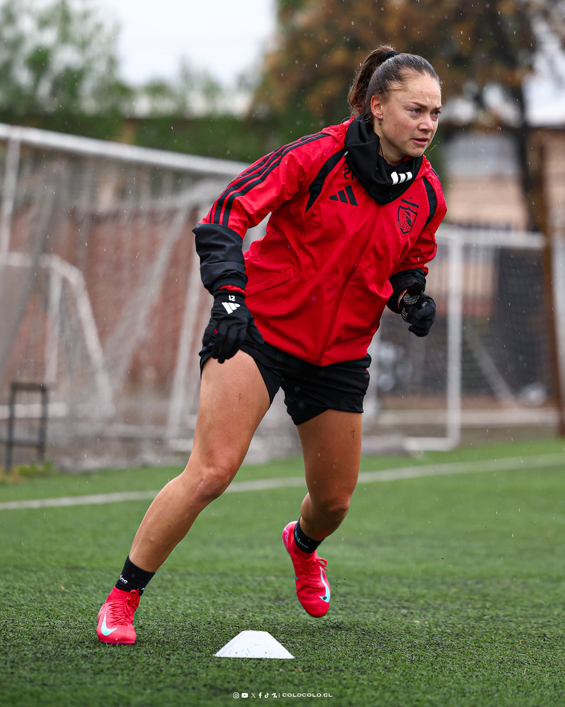

Universidad de Chile recibe a Colo Colo este sábado en el Bicentenario de La Florida, y la gran incógnita de cara al Superclásico es si Estefanía Banini hará su debut oficial tras su regreso al club.

Universidad de Chile y Colo Colo disputan este sábado 8 de agosto, a las 15:00, el Superclásico del fútbol femenino chileno en el Estadio Bicentenario de La Florida, en la revancha de la edición jugada en junio en el Estadio Monumental. El partido será transmitido por Mega.
La gran pregunta que recorre a los hinchas albos es si Estefanía Banini hará su debut oficial. La mediocampista, considerada una de las mejores futbolistas argentinas de la historia y extitular de la Selección, volvió a Colo Colo el 22 de julio como primer refuerzo del club para la segunda mitad de 2026, doce años después de haber dejado la institución, donde se transformó en ídola entre 2011 y 2015. En su presentación fue contundente sobre el objetivo del semestre: "Vamos por la segunda Copa Libertadores", haciendo referencia al título continental que el club obtuvo durante su primer paso por la institución.
Tras superar los exámenes médicos, Banini quedó habilitada para sumarse a los entrenamientos, pero desde entonces sigue un plan de preparación física y táctica especial junto a la entrenadora Tatiele Silveira antes de estar disponible para jugar. Según trascendió en medios chilenos, la propia DT reconoció que todavía no hay una fecha definida para su regreso a las canchas, y que el proceso de puesta a punto avanza de forma gradual, sin un cronograma cerrado para esta semana.
El cruce llega con antecedentes recientes favorables para el Cacique, que se impuso con claridad en encuentros anteriores de la temporada. Universidad de Chile buscará revertir la historia como local, mientras que Colo Colo intentará estirar su buen andar en el año en que además compite por la Copa Libertadores Femenina.
Seguir leyendo
Seguinos en redes